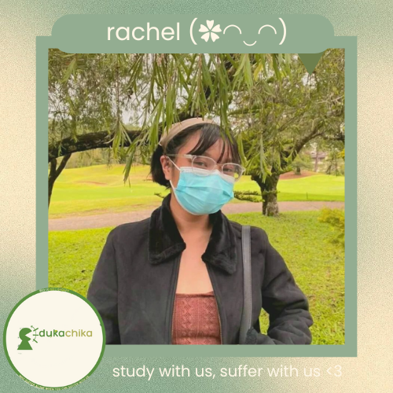
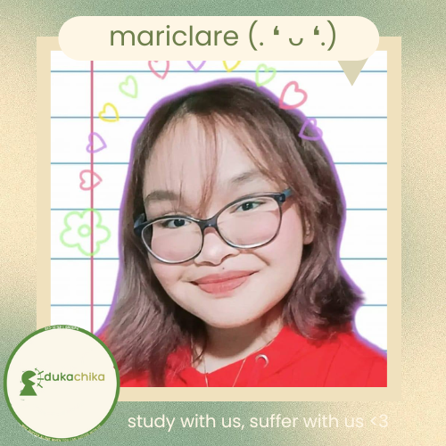
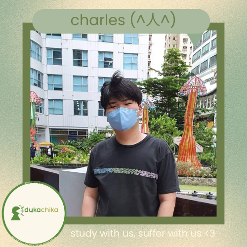

In a nutshell it's filming in real time. May it be you playing games, chatting with viewers or people, or doing anything!
The continuous transmission of video data from a server to a client is known as video streaming. Video streaming allows users to interact with their clients. Users may watch videos online without having to download them. Movies, TV shows, YouTube videos, and live streamed material are examples of streaming video content. The continuous transmission of audio and video data from a server to a client is referred to as streaming. Content in video broadcasts is transferred in compressed form via the internet and is viewed in real time by the viewer.
DIFFERENT CONTENT TYPES
There are tons of different streaming content that can be seen in the streaming world.
These are:
Podcasts
Webcasts
Movies
TV Shows
Music videos
Gaming
Q&A’s
Interviews
Vlogs
Tutorials
News
Events
PLATFORMS USED IN STREAMING
Since live streaming has become more popular amongst the people nowadays, there are tons of streaming platforms that were created that people can use in order to stream their preferred content. These are some of the platforms that can be used for streaming:
YouTube
Twitch
Facebook
Instagram Live
TikTok Live
Kumu
Bigo Live
CHOSEN CONTENT TYPE
Going beyond the conventional method of testing, the group has opted to conduct the study using a mixture of different content types. Mainly, podcasts, QnAs, and studystreams, but the group will mainly focus on studystreams. The objective of this activity is to determine if all, or any, of those study methods popularly shared by the StudyTok community actually works. The subjects of the study has been assigned different study methods, after which an online test will be conducted, to check for retention and efficiency.
CHOSEN STREAMING PLATFORM
As per the topic we have chosen— the team believes that "Tiktok" is the right platform to stream in. In correlation to the research topic of finding out if StudyTok tips and tricks are effective in improving a Junior Highschool students' study habits—TikTok is the most appropriate app in streaming.
WHAT DID THEY THINK?
WHAT'D THEY THINK?
Survey responses.
Click on the images to make
them bigger
DEMOGRAPHIC
DATA INTERPRETATION
Based on the survey the group has provided, which, aside from asking personal questions, it also asked about the respondents' preferred streaming content type, with focus on our research topic. See the image below as reference
BELIEFS AND OPINIONS ON THE TOPIC
Most respondents (39.4%) (13 respondents) answered live interviews/ QnAs because they would like to get to know a person and their thoughts and opinions on something or someone.
Second content type taking lead– Live podcasts. 33.3% (11 respondents) of the students want to listen to podcasts because most of them want to listen in on the speakers' opinions on something.
Lastly, 27.3% (9 respondents) of students chose to study streams because they would want someone to study with. To keep themselves company.
48.5% of the respondents were familiar with the term/ sub-community called “StudyTok”.
51.5% of the respondents were not familiar with the term/ sub-community called “StudyTok”.
For those who were familiar with StudyTok; the survey made the respondent's rate how much StudyTokk has helped them improve their study habits (scale of 1 - 5; 1 being the lowest and 5 being the highest)
6.3% responded with 1 (Did not help in improving my study habits at all)
None have responded with 2 (I picked up 1 or 2 study habits)
18.8% responded with 3 (Has somewhat helped in improving my study habits)
43.8% responded with a 4 (Picked up a significant amount of study habits/ ways of improving study habits)
31.3% responded with a 5 (has helped very much in improving my study habits)
NEEDS OF VIEWERS
A. Chosen Content Type
Based on your audience analysis, choose a streaming category/type that is appropriate to the topic.
As per the answers in the survey, JHS students would much prefer a study live stream wherein each member would test out a study habit/ practice popular on TikTok, and using those study methods, each member will study the same topic, and by the end of it, the group will have a quiz regarding the topic studied, in order to see what method is more effective.
We are not, however, closing our doors to other types of streaming content– such as interviews, and just chatting with our audience about school-related things, etc…
Going beyond the conventional method of testing, the group has opted to conduct the study using a mixture of different content types. Mainly, podcasts, QnAs, and studystreams, but the group will mainly focus on study streams. The objective of this activity is to determine if all, or any, of those study methods popularly shared by the StudyTok community, actually work. The subjects of the study has been assigned different study methods, after which an online test will be conducted, to check for retention and efficiency.
B. Using The Empathize Stage In The Design Thinking Process
INSTRUCTIONS:
1.) Use the techniques in the Empathize stage of the Design Thinking Process to find a need of viewers in the streaming category that you chose.
2.) Maximize the different techniques of the empathize stage.
3.) Use the methods of basic research to identify the reason why people of different ages, statuses, beliefs, etc. watch the streams they watch.
4.) You can perform research, interview people, and even perform surveys, just make sure that it will not require you to go out of the house.
SHARING EXPERIENCES AND OPINIONS
People, most specifically, Junior High School students watch study sessions, because the thought of someone “studying with you” keeps them company and makes them comfortable. Based on the interviews conducted via gmeet calls with some of the respondents:
As per one of the respondents: She chose live study sessions because she would want to see if TikTok study tips were truly effective, and she would want us to serve as testers. She finds watching live study sessions fun because it motivates her to study with the live streamers.
In addition, another interviewee had also mentioned that Studystreams bring me comfort—I kinda feel like I'm with friends studying in a cafe. Plus, I really like the fact that your group is gonna be studying differently, and I think it's pretty exciting!
CHARACTERISITCS OF A GOOD STREAM
To execute a quality -worthy streaming, a creator needs to exhibit a number of attributes. Here are some characteristics:
Presentable streamer - Making a good first impression always starts with appearance! To increase views, it is essential to do this. One gains a lot of self-confidence and speeds up the development of his career by maintaining a respectable physical appearance and using proper etiquette. It's crucial to keep your content open to all audiences since we must also be conscious that the age range of our visitors may vary.
Ability to create good content - People are more inclined to visit your channel if you your contents with higher skill. People will be interested in seeing more if you pull off an outstanding shot, performance and ability.
Interesting content - Look for opportunities to make jokes or call attention to anything amusing by being creative and proactive in your quest. Many outstanding streamers have become well-known by making people laugh and being amusing.
Accessible stream - Convenience for our viewers is provided via accessibility. Your channel's follower count can grow as a result of greater exposure. Accessibility will make it simpler for users to search and share live content on your channel. They will need to share your content quickly so that their friends can also see it because it necessitates rapid action.
Regular uploads - Consistency is the best strategy for getting viewers to return to your channel, thus it's advised to create a routine for when and how often you'll upload so that people will know when to watch your live streams.
Engaged with viewers/other streamers - Since many viewers prefer a more personal relationship with you than merely watching the streamer, engagement with viewers is crucial. Try to work with other streamers to increase your chances of being noticed or discovered because both of your viewers and theirs may be interested in you.
MEET THE TEAM
Get to know the brains behind team EdukaChika! You may contact any of the group's members for any inquiries and concerns.
Click the boxes below to reveal the members
VALENZUELA, HANNAH NICOLE
üìßContact me via google chat or email ap.hannahnicole.valenzuela@apecschools.edu.ph

YANGAT, ESTER RACHEL
üìßContact me via google chat or email ap.esterrachel.yangat@apecschools.edu.ph

MAEN, MARICLARE JASTIN
üìßContact me via google chat or email ap.mariclarejastin.maen@apecschools.edu.ph
CRUZ, JENNIFER AUDREY
üìßContact me via google chat or email ap.ap.jenniferaudrey.cruz@apecschools.edu.ph@apecschools.edu.ph

MARCELO, CHARLES GABRIEL
üìßContact me via google chat or email ap.charlesgabriel.marcelo@apecschools.edu.ph
HIDALGO, SOFIA BIANCA
üìßContact me via google chat or email ap.sofiabianca.hidalgo@apecschools.edu.ph